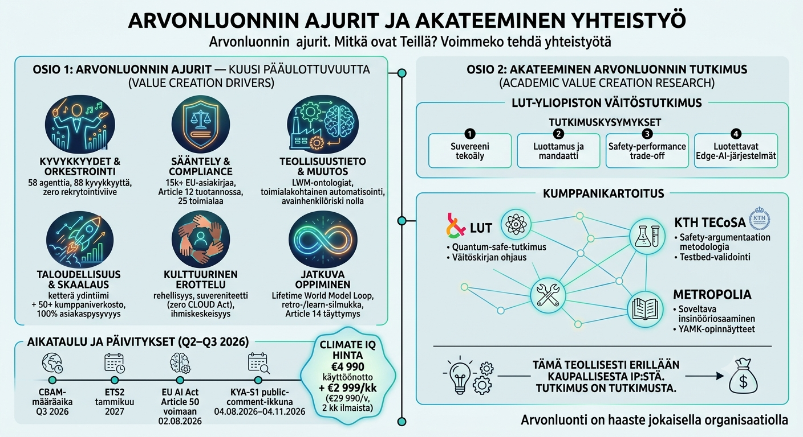

Kuusi arvonluonnin ajuria — ja tutkimus niiden takana
06.08.2026 · Risto Anton Päärni · Espoo, Finland

Kysymys, joka toistuu
"Mistä arvo oikeasti syntyy?" Sijoittajat kysyvät sen yhdellä tavalla, asiakkaat toisella, ja oma tiimimme kysyy sen jokaisessa retrossa. Tämä kirjoitus on vastaus, johon päädyimme tänä vuosineljänneksenä — kymmenen ajuria, järjestettynä kuuteen ulottuvuuteen, joista jokainen palautuu lukuun, ei iskulauseeseen.
1. Kyvykkyydet & orkestrointi — agenttidupleksointi ilman rekrytointia
58 agenttia, 88 kyvykkyyttä kymmenessä Lifetime World Model -ontologialuokassa. Asiakkaalle tarjotaan ei "osta ohjelmisto" vaan "rooli täytettynä perjantaihin mennessä" kuuden kuukauden rekrytointikierroksen sijaan. 95 % tuotannon päätöksistä vaatii yhä ihmisen hyväksynnän — agentit nopeuttavat harkintaa, eivät korvaa sitä. Rakensimme työkalun — Keskeytyslaskurin — joka antaa euromäärän sille, mitä kyvykkyyskatko oikeasti maksaa: kontekstin uudelleenrakentaminen, momentumin menetys, yksi avainhenkilö joka lähtee ovesta prosessitiedon mukanaan.
2. Sääntely & compliance — automaatio ennen velvoitetta
15 000+ EU-asiakirjaa indeksoituna, CELEX-viittaus jokaisen järjestelmän päätöksen takana. EU AI Act Article 12:n auditoitavuus on ollut tuotannossa maaliskuusta 2026 asti — Article 50 tuli voimaan 2. elokuuta 2026, ja olimme jo siellä. Chronos-agentti seuraa compliance-kalenteria 25 säännellyllä toimialalla ja hälyttää ennen deadlinea, ei sen jälkeen. Yhden asiakkaan kuukausittainen compliance-työmäärä laski 60 tunnista 8 tuntiin — 87 % vähenemä, ei ennuste.
3. Teollisuustieto & muutos — ei avainhenkilöriskiä
Jokaisen asiakkaan Lifetime World Model -ontologia elää heidän omistamallaan laitteistolla — Control Roomissa tai Situation Roomissa — ei meidän päässämme tai pilvessämme. Kun sääntely muuttuu, agentti päivittyy; ketään ei tarvitse rekrytoida uudelleen, eikä kukaan lähtevä vie tietoa mukanaan. Yksitoista toimialakohtaista agenttia (esimerkiksi teräksen CBAM-hiilikirjanpito) on olemassa, koska tieto koodataan kerran ja käytetään uudelleen — ei rakenneta joka projektissa alusta.
4. Taloudellisuus & skaalaus — enterprise-kapasiteetti startup-kustannuksella
Ydintiimi on kaksi henkeä: toimitusjohtaja ja toimistopäällikkö. Vertailukelpoiset compliance-työkalukilpailijat pyörittävät 100–300 työntekijää. Me skaalaudumme lisäämällä agentteja ja vuodesta 2020 rakennettua 50+ kumppanin verkostoa, emme lisäämällä henkilöstöä. Kuusi maksavaa asiakasta, nolla asiakaspoistumaa, €7–14K kuukausittainen toistuva liikevaihto tänään, suunta kohti noin €900K vuosittaista liikevaihtoa vuonna 2027 — samalla kahden hengen ydintiimillä.
5. Kulttuurinen erottelu — suomalaiset arvot liiketoiminnan etuna
Yksi julkaistu hinta kaikille — ei neuvottelua, ei piilotettuja ehtoja. Suvereeni infrastruktuuri — UpCloud Helsinki sekä NVIDIA DGX ja Jetson reunalla — tarkoittaa nolla-altistusta USA:n CLOUD Act -lainsäädännölle ja dataa, joka ei koskaan poistu EU:sta. Ja viestintä pysyy linjassa "AI augmentoi, ei korvaa": päätös henkilöstömäärän muutoksesta on asiakkaan, ei koskaan meidän tehtävämme päättää heidän puolestaan. Se on tarkoituksellisesti epäamerikkalainen myyntipuhe — todisteet ennen adjektiiveja.
6. Jatkuva oppiminen — silmukka, joka ei koskaan nollaudu
Jokainen asiakasprojekti syöttää tuloksensa takaisin tuotteeseen. Yhden kuljetusalan asiakkaan compliance-automaation 87 % ajan säästö muuttui Climate IQ -ominaisuudeksi saman vuosineljänneksen aikana. EU AI Act Article 14:n ihmisvalvontavaatimus täyttyy jo kuusivaiheisella HIC Learning Outcome -protokollallamme — useimmat kilpailijat vasta rakentavat sitä kohti. Mikään ei katoa: jokainen oivallus päätyy tietopankkiin, field noteen ja HTML-tallenteeseen, tässä järjestyksessä, joka kerta.
Seitsemäs ulottuvuus: tutkimus, joka ei ole myynnissä
Tuotekehityksen rinnalla Risto vie eteenpäin väitöskirjatutkimusta — suvereenit AI-arkkitehtuurit, luottamus ja delegointi autonomisissa järjestelmissä, turvallisuuden ja suorituskyvyn kompromissit, sekä luotettava reunalaskenta — LUT-yliopiston johtaessa työtä, KTH:n (Tukholma) TECoSA-ryhmän validoidessa turvallisuusväitteet, ja Metropolia Ammattikorkeakoulun muuntaessa löydökset toimiviksi prototyypeiksi.
Tämä tutkimus on tarkoituksella eristetty kaupallisesta omistuksesta. Se julkaistaan vertaisarvioiduissa julkaisuissa, avoimilla lisensseillä, ilman patentteja — nimenomaan siksi, ettei pääoman kerääminen koskaan saa syytä vääntää tieteellistä johtopäätöstä. Mitä se voi tehdä, on vaikuttaa eurooppalaiseen AI-politiikkaan ja teknisiin standardointielimiin (ETSI, ISO, CEN), jotka työstävät suvereniteetin teknisiä vaatimuksia, ja ajan myötä syöttää oivalluksia takaisin tuotekehitykseen — ilman että omistus koskaan siirtyy.
Miksi tällä on merkitystä sinulle
Jos arvioit meitä asiakkaana, sijoittajana tai tutkimuskumppanina, kuusi kaupallista ulottuvuutta selittävät, miksi laskun summa on perusteltavissa, ja seitsemäs selittää, miksi sen takana oleva tiede on uskottavaa riippumatta siitä, maksetaanko lasku. Molemmat puoliskot kantavat painoa.
Risto Anton Päärni — Founder, CEO, Lifetime Oy.
Tilaa Lifetime Scope Journal
Viikoittaisia oivalluksia EU-compliancesta, AI-agenteista ja teollisuuden muutoksesta.
Tilaa